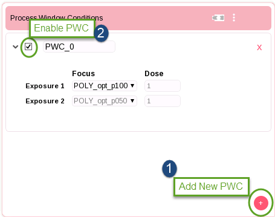
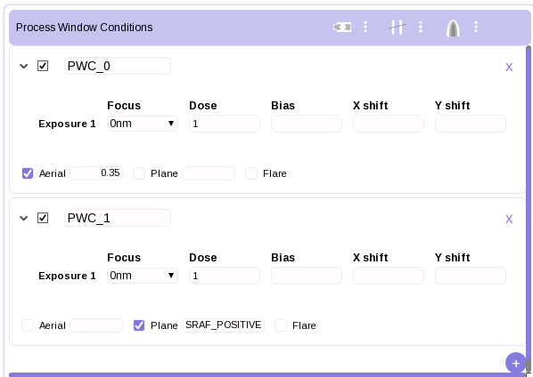
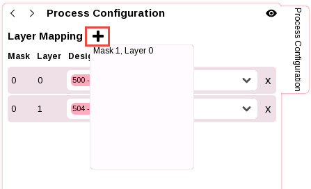
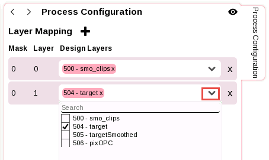

A single Process Window Condition (PWC)
is created when you open a Litho Model or Sparse simulation. Adding
additional PWCs causes the tool operations to run once for each
defined PWC. This allows you to test multiple process scenarios
with a single button press.
Procedure
- By default,
the simulation session has one Process Window Condition (PWC). To
add PWCs, click on the + button in the lower
right of the Process Window Conditions pane.
Figure 1. Process
Window Configuration
Each PWC card has one Exposure per mask
defined in the Process Configuration section. Each Exposure has
default Focus and Dose field
values corresponding to the mask definitions.
- (Optional)
For each PWC card, modify the PWC name and the Exposure values
for Focus and Dose.
Click in a field and type or select as appropriate to modify the
value.
- (Optional)
Select the check box in the upper left of the PWC pane to include
or exclude that PWC from the simulation operation.
- (Optional)
If you are using a Litho Model session, additional control buttons
are available to toggle process exposure model usage:
Figure 2. Process
Window Conditions (Litho Model Session)
Aerial —
Selecting this button ignores the resist model and uses a constant
threshold resist (CTR) model for simulations. You can change the
threshold value by typing in a value next to the Aerial text.
Plane —
Selecting this button performs a ZPlanes (3D resist imaging) simulation
for the selected process condition. You must also enter an appropriate
ZPlanes value in the field next to the Plane text and have a ZPlanes
model available in your litho model.
Flare —
Selecting this button uses the flare model present in the loaded
litho model for simulations.
- (Optional)
Configure or reconfigure the mask layer mapping from the Process Configuration
pane.
Note: If you have already configured
the mask layer mapping, you can usually skip this step; the controls
are provided here for convenience.
- (Optional)
To add a layer mapping, click the + button
to the right of Layer Mapping in the Process
Configuration pane. Choose from the available masks listed.
Figure 3. Process
Configuration Layer Mapping
- To change
a layer mapping, click in the Design Layers field
of the Process Configuration pane, then select a layer from the
available choices.

Results
The process window conditions are set and simulations can be
run on them using the toolbars, as described in the next chapter,
“RET Flow Tool v2.0 Operations”.